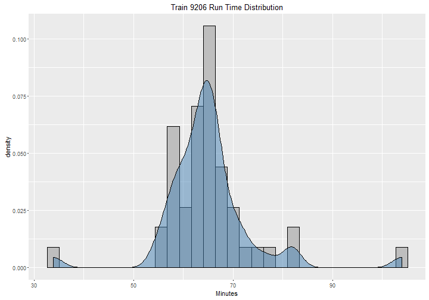

The Southeastern Pennsylvania Transportation Authority (SEPTA) recently made a dataset available on kaggle.com. This dataset contains performance data for SEPTA's regional rail system.
Due to the dataset being very large and there being a large number of trains, it made sense to develop a simple app that could show for each train it average runtime, locations, and on-time performance.
I first performed some processing of the raw data in which I calculated the run times of each train each day. This resulted in a processed data set that sits underneath the Shiny app. You can find the code that I used to preprocess in the github repository.
The data set contains data from March 23, 2016 through May 30, 2016.
SEPTA Regional Rail Performance
A Shiny application
Troy Walters
Data Analyst
The Data
Components of the Application
The Shiny application consists of three main parts:
- Performance information for the selected train
- A histogram/density plot of the selected train's run times
- An interactive leaflet map showing the train's measured locations
Train Run Times
A selected train's run times are show as a histsogram and density plot:

Final Product
A screenshot of the actual Shiny application, which also includes an interactive leaflet map: